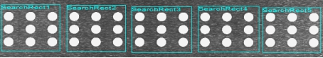
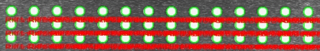
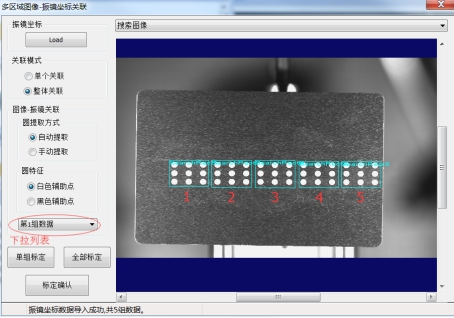
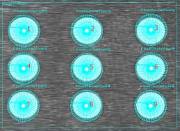

多区域标定工具是在指定的搜索区域内对多组图像坐标和对应的振镜坐标进行关联，适用于将图像划分为多个小区域进行关联的场景，其关联结果如图1所示。


| 分类 | 参数名称 | 参数描述 |
|---|---|---|
| 属性窗口 | 是否融合像素当量 | 选择“是”，需要对数据链中输入像素当量参数进行配置，是将像素当量值与图像振镜夹角进行融合得到转换矩阵。 |
| 标定精度 | 完成标定后使用标定结果反向计算出9个圆心的理论激光坐标，并和实际坐标比较得到每个圆心处的标定误差，当圆心标定误差超过此值时，将其误差文本置为红色，以提示用户此标定结果误差过大，仅做提示用，不影响工具的执行成功与否。 | |
| 图像窗口 | 输入图像 | 显示与振镜坐标相关联的图像。 |
| 数据链 | 输入图像 | 输入图像宽度、高度、像素大小，同图像窗口的输入图像参数。 |
| X轴方向 | 振镜X坐标轴方向。 | |
| Y轴方向 | 振镜Y坐标轴方向。 | |
| 高级界面 | 关联模式 | 图像坐标与振镜坐标关联的方式，分为2种，单个关联和整体关联。 |
| 振镜坐标 | 输入相关联的振镜坐标，由TXT文件导入，其中TXT文件每行有9个坐标数据，坐标数据间用分号隔开，坐标数据的X、Y数据用逗号隔开。例如 3.5,4.6； | |
| 圆提取方式 | 提取方式分为2种，手动提取或自动提取。 |
|
| 圆特征 | 根据Mark点颜色分为白色和黑色。 |
| 分类 | 参数名称 | 参数描述 |
|---|---|---|
| 监视窗口 | 输入图像 | 输出图像宽度、高度、像素大小。 |
| 二维线性变换 | 输出图像坐标与振镜坐标关联后的矩阵信息。 | |
| 图像坐标 | 输出图像坐标与振镜坐标关联后图像坐标点集。 | |
| 激光坐标 | 输出的激光坐标点集。 | |
| 标定信息 | 标定信息字符串。 | |
| 执行结果 | 工具执行结果。 | |
| 执行时间 | 工具执行时间。 | |
| 图像窗口 | 输入图像 | 显示与振镜坐标相关联的图像，同监视窗口的输出图像参数。 |
| 执行结果 | 显示工具执行结果，执行成功显示“OK”，执行失败显示“NG”，同监视窗口的执行结果参数。 | |
| 数据链 | 二维线性变换 | 输出图像坐标与振镜坐标关联后的矩阵信息，供后序多区域振镜位置计算工具使用，同监视窗口的二维线性变换参数。 |
| 图像坐标 | 输出图像坐标与振镜坐标关联后图像坐标点集，供后序多区域振镜位置计算工具使用，同监视窗口的图像坐标参数。 | |
| 激光坐标 | 输出的激光坐标点集，供后序多区域振镜位置计算工具使用，同监视窗口的激光坐标参数。 |
1.单个关联模式
单个关联每次只关联一组图像坐标和振镜坐标(9个)，在如图所示2的下拉列表中选择当前关联的数据组，关联成功时，状态栏显示第x组关联成功，然后改变关联数据组，拖动搜索区域，进行下一组数据坐标的关联，直至完成所有的图像坐标与振镜坐标关联。
单组关联失败时，可以改变下拉列表中当前选择数据组的提取方式或者改变搜索区域，直到关联成功，再进行下一组标定。
关联完成后点击标定确认按钮，根据状态栏显示提示信息，如果哪一组未关联成功，对该组数据重新进行关联。
2.整体关联模式
整体关联一次可以完成所有图像坐标和振镜坐标的关联，关联时搜索区域需要按顺序摆放如图3所示，关联完成后，点击标定确认按钮。
整体关联完成后，可以对其中的单组数据再次进行关联，在下拉列表中，选择要重新关联的数据组，选择合适的提取方式，点击单组标定。

手动提取是指在搜索区域内手动摆放卡尺提取Mark点，其中每个搜索区域内卡尺的排放顺序如图3所示。自动提取只在搜索区域内自动提取Mark点。

多区域标定工具与多区域振镜位置计算工具配合使用。
多区域标定工具必须在高级属性界面完成关联后，才能在流程图中正常使用。
多区域标定工具在高级属性界面完成关联退出后，如果想重新关联其中的某一组时，重新进入高级属性界面，选择单组关联模式，在下拉列表中选择要重新标定的数据组，拖动搜索区域到对应的图像位置处，点击单组关联即可。切记不要重新导入数据，如果误操作点击Load按钮，点取消退出即可；或者误操作重新导入数据，那么重新进入高级属性界面即可。
多区域标定工具在手动提取模式下，鼠标左键双击其中一个找圆卡尺，在弹出的属性对话框中改变其参数(卡尺数量、卡尺搜索方向)，然后鼠标拖动该找圆卡尺(改变搜索长度和投影长度参数)，即可完成所有找圆卡尺的同步刷新。
参见“\Samples\多区域标定工具.gvp”。